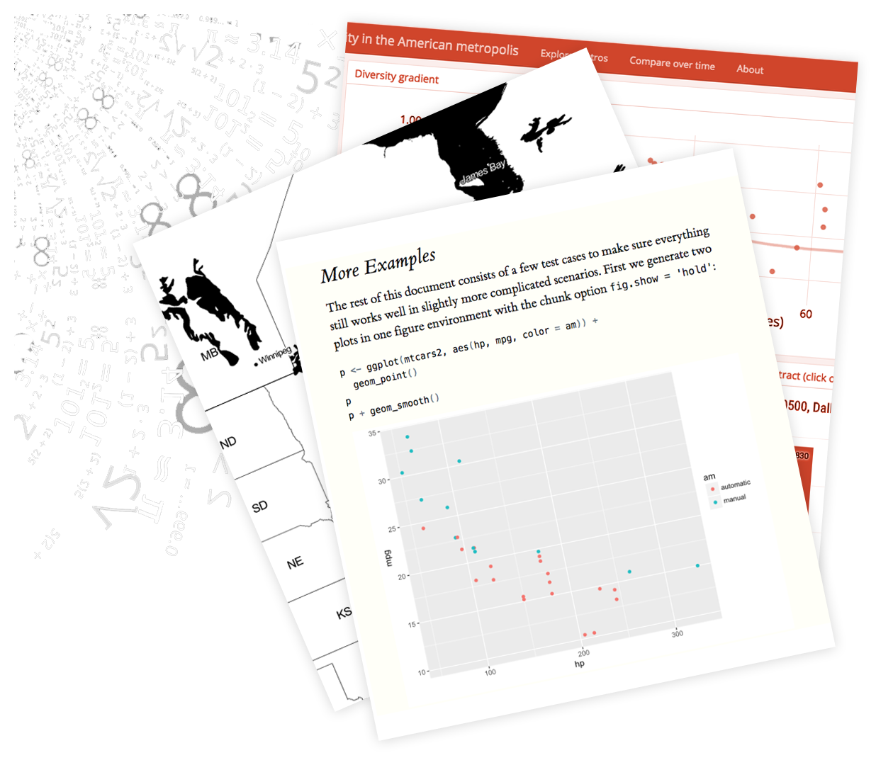

6 Putting it All Together (and into Markdown)
7 Key Takeaways
- Take notes/annotate code as you go
- Use the assignment operator
- Read your error messages
- Data import with
read_csv() - Data management with
library(dplyr) - Visualization with
library(ggplot2)
8 Helpful Packages
- Import Data
- readr - for plain text files
- readxl - for Excel files
- haven - for SAS, SPSS, and Stata data formats
- here - set directory
- remotes or devtools - install packages from Github
- arrow - read/save binary data
- Manipulate data
- tidyverse - format tidy data (includes the following packages)
- dplyr - wrangle data using %>%
- lubridate - clean dates
- stringr - clean strings
- purrr - iterate
- Visualize data
- ggplot2 - plots!
- urbnthemes - format and style according to Urban Style
- urbnmapr - create Urban themed maps
9 What is R Markdown?
Source: RStudio
- This webpage is a Markdown! It creates a pdf/word/html output file that can include:
- Code chunks
- Code output (graphs/charts/tables)
- Formatted text and images
10 urbntemplates
library(urbntemplates) contains three families of functions:
start_project()generates a new project with a .Rproj, README, and .gitignore at the specified location on a machine.construct_*()functions add multiple, related templates and documents to a project directory or sub-directory. The templates and documents are related in important ways. For example,construct_shiny()adds app.R and an R Shiny specific CSS. It also adds instructions for using the selected template.use_*()functions add individual templates and documents to a project directory or sub directory.
A sensible workflow is: 1. Start a new project and create a .Rproj by submitting urbntemplates::start_project(). This will create and open a new .Rproj. 2. Inside the .Rproj, add the necessary documents for a part of a project, like a Shiny application, with a construct_() function. 3. Add any desired remaining templates or documents with use_() functions.
10.0.1 start function
start_project()
10.0.2 construct functions
construct_shiny()construct_fact_sheet_html()construct_fact_sheet_pdf()construct_slide_show()construct_web_report()
10.0.3 use functions
use_content()use_css()use_fact_sheet_html()use_fact_sheet_pdf()use_git_ignore_urbn()use_instructions()use_iterate()use_preamble()use_revealjs()use_shiny_app()use_readme_readme()use_web_report()
10.1 1. YAML Header
Controls the settings of the document.
10.2 2. Markdown
Markdown is a lightweight markup language for creating formatted text using a plain-text editor. R Markdown Reference Guide
10.3 3. Code Chunks
Creates the code output for the document.
11 Create a Markdown HTML Fact Sheet - Piece by Piece
Step 1: Install library(urbntemplates)
install.packages("remotes")
remotes::install_github("UrbanInstitute/urbntemplates")Step 2: Create a new project using start_project()(Parenthesis should have directory and name of new project). Once you create the project, open a new script and create an html fact sheet using urbntemplates::construct_fact_sheet_html()
Step 3: Resave the .Rmd with a better name.
Step 4: Knit the R Markdown into a pdf document.
Step 5: Add some text into the markdown, some code that appears as code, and some code that shows the result but not the code. Every code chunk should start with {r name} and then set the parameters (T/F, separated by comma. See full factsheet for more parameters.